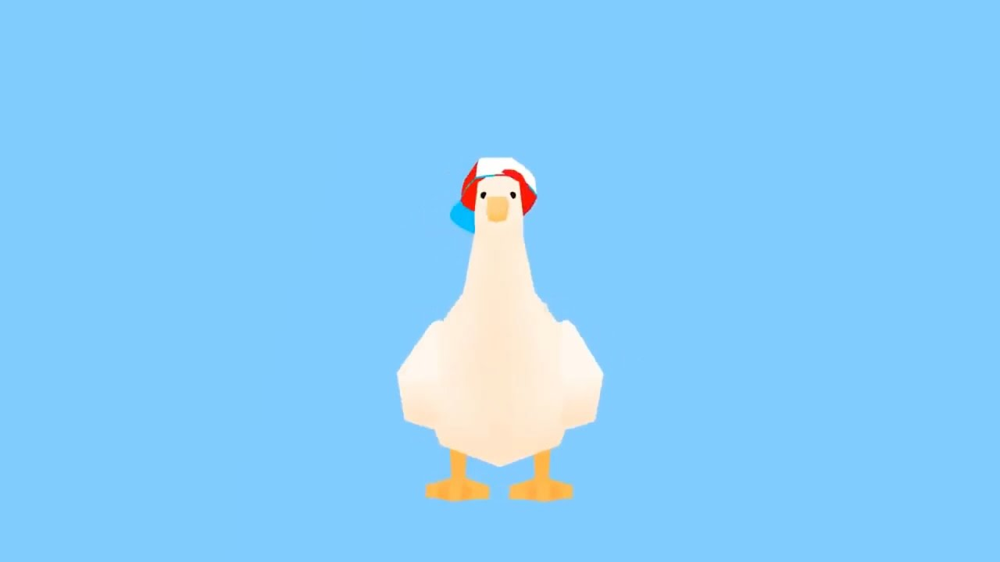

Introduction
Oozora Subaru
Who is Subaru?

Subaru is a Japanese streamer that does livestreams using a face-tracking virtual avatar, under the Vtubing company, "Hololive". Cool, right?
General Information
| Original name: | 大空スバル |
|---|---|
| Birthday: | July 2 |
| Gender: | Female |
| Height: | 154cm |
One of her most infamous in-jokes is her impersonations of Donald Duck.
The joke was even taken further when she appeared on stream as a 3D render of a little white duck wearing her signature baseball cap. Since then she has embraced being associated with a duck being used as her mascot.
